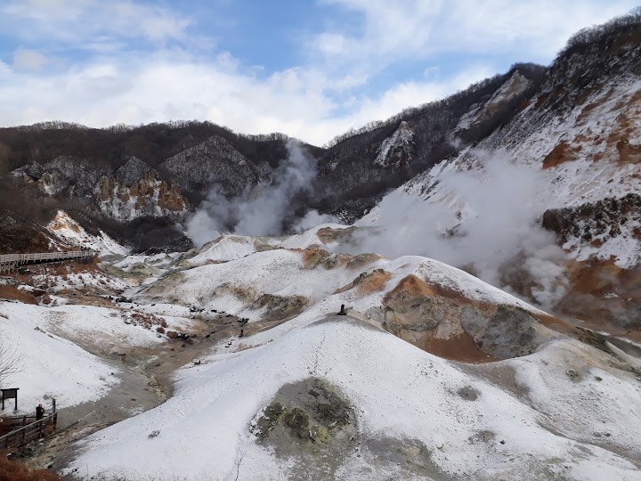
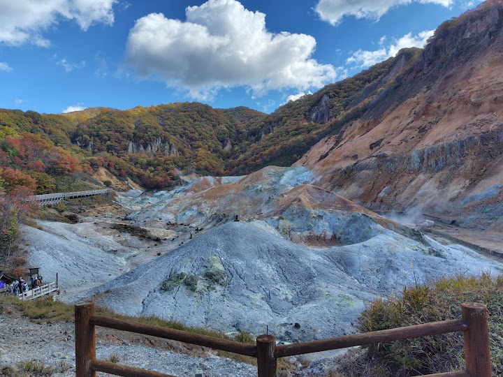
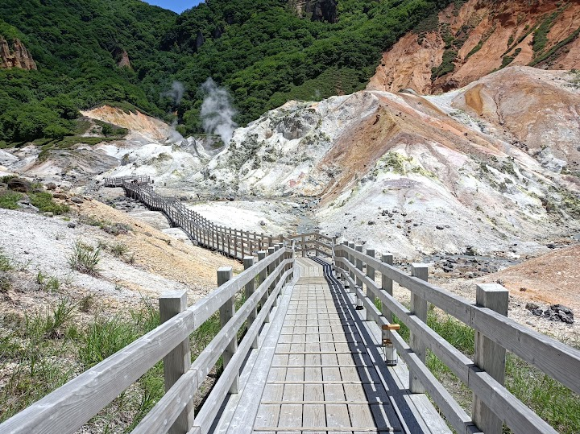
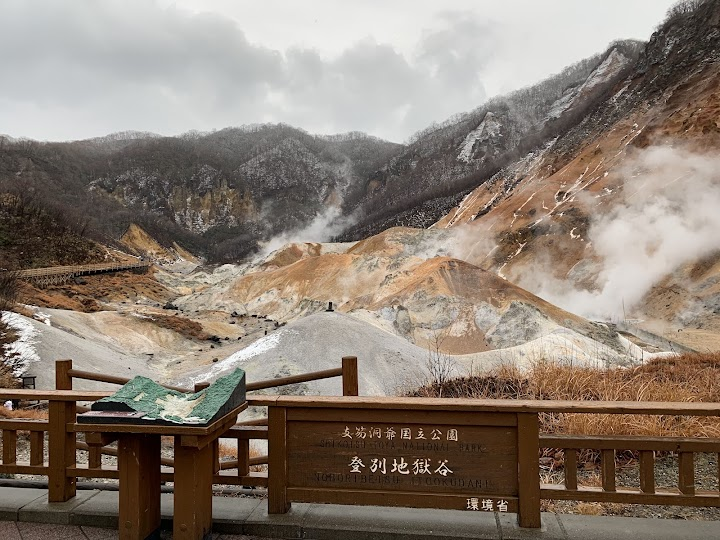
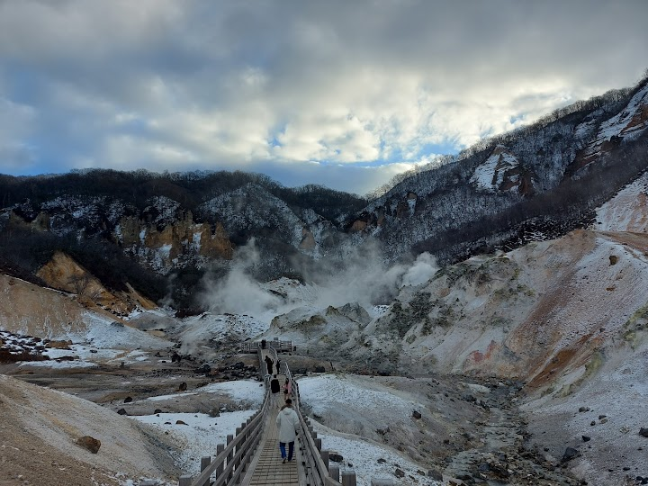

Noboribetsu Jigokudani (Hell Valley)
Dramatic crater with boiling sulfuric hot springs, volcanic steam plumes & hiking paths.
Open in Google Maps (street view, more photos and reviews there)






Visitor tips on finding it and getting there
This place is hot. Even from the parking lot, you can feel the heat and smell of sulphurous gas in the air. The paths are well made and very well maintained. If you climb to the upper viewpoint, you get to see the big steaming crater of what makes this place get called the Valley of Hell. There's also a nice glade with small viewpoint for sitting around and chilling.
An amazing walk at this time of year with all of the lanterns lighting up the wooden path into the valley. The walk takes roughly 30 minutes if you don’t stop but about an hour if you like to stop and take in the views. It was honestly so romantic once it gets later and there aren’t many people out. It was so peaceful and also very cool to see the geological wonder that is Jigokudani Valley. It’s free so there’s no reason not to check out this spot.
Technically this is the source water for all of the hot water spas, Onsen, in the village. It's a easy block walk from town. Major path along side the valley with several overlooks. These lead to more paths to the surrounding areas. Easy lower walk and longer hikes for the serious. Plan a couple of hours to enjoy the experience.